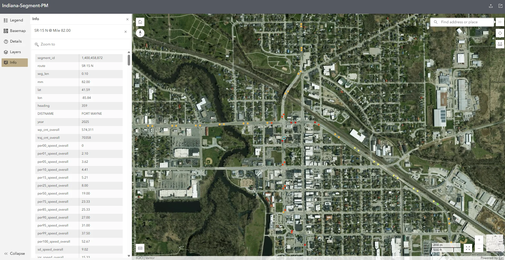

SYSTEM 01 · STATEWIDE SCREENING PLATFORM
INDOT Central Office & Districts
108B+ Annual Waypoints
24,831 Highway Miles

Indiana Segment-PM WebGIS Platform
An operational cloud-scale analytics platform that converts billions of connected vehicle trajectory points into granular 0.1-mile segment performance measures across the entire state highway network, resolving localized friction points and intersection queues that aggregate corridor averages obscure.
0.1 mi
Granular Spatial Segments
0th–100th
Full Empirical Speed Percentiles
574k+
Waypoints / Segment Sample
23 CFR 490
Federal Rule Compliance
Agency Use Cases: Pinpoints localized bottleneck formation, evaluates interchange spillbacks, and enables district traffic engineers to make immediate operational decisions without waiting for costly manual field studies. Actively incorporated into capital investment committee assessments.